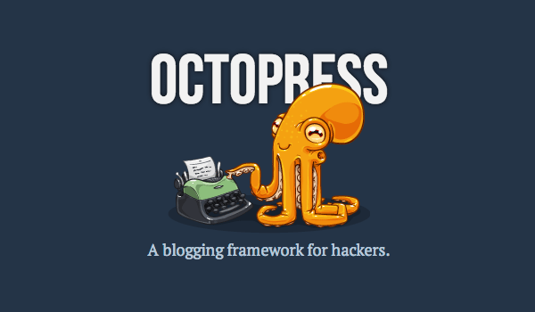

博客迁到Octopress
之前Wordpress博客租用的主机空间也快到期了，连同onhacking.com这个域名，都只是付了一年的费用。这一年里用Wordpress写博客不算积极，虽然说成本很低，域名加空间大概每个月平均10rmb，但是域名放在Godaddy的DNS服务器上经常被墙，戈戈的主机也时不时抽抽风，结果是博客页面常常无法打开，总体体验并不好。
所以趁着这次机会，计划把原来的博客迁出来到Octopress上。为什么选择Octopress呢？吸引我的是它的几大优点：
- 文本为王，除了如图片等二进制的文件外，博客主要是构成框架的代码，和构成内容主体的文本组成，将博客尽量文本化，既方便了书写，也方便做迁移更新等管理维护
- 用标记语言markdown写博客，比用html要方便，因为markdown的设计目标就是为了方便阅读书写，但它又支持内嵌html标记，在markdown之上要用html来进行更深度的控制也是可以的，相对html它的表达能力并没有减弱
- 免费成熟的git版本管理+Github网页托管，也可以用Heroku或自搭VPS，比较灵活
对比来看，上面列出的这些Octopress优点的反面，也就是Wordpress的缺点：
- 过分依赖MySQL，虽然功能强大，但复杂度和性能都是问题，它的非文本实现也决定了不好做版本管理，虽然有扩展能够做到自动备份，如果不是深入了解它的的内部实现，备份是怎么做的，备份有哪些内容比较不透明
- 交互依赖图形UI，比较适合一般用户的使用，但很多习惯“非所见即所得”的人，他们更喜欢在文本编辑器如Vim或Emacs里用html或markdown等标记语言来写文章
如果Octopress只有一个优点，可能吸引力还不算大，几个方面的优点组合起来，对我这种对blogging只有简单post文章需求，然后又有一定的编码能力的人来说，抛弃Wordpress转到Octopress是迟早都会发生的了。Octopress的官网说它是"A blogging framework for hackers"，从设计开始它就注定带上hacker的特质，它的一些特点，例如文本为王，明显是来自于Unix的哲学，又如版本管理，也都很有针对性的只面向写代码的人，而非一般用户。
从上周末开始，断断续续的花了一些时间把原来的博客迁移到Octopress上。首先要把Octopress搭起来，目前Octopress的部署共有3种方式，也就是上面说的Github, Heroku或Rsync(自搭服务器)。我希望把页面放在Github上，Github支持300M的免费空间，而Octopress存放的是静态页面，这么大的空间能用好长一段时间，这样一来就连租主机空间的钱也省去了，所以用Octopress搭博客有免费的方案，比Wordpress要好一点，当然有需要的话也可以在个人服务器部署。
如何搭建一个Octopress站，最好的指引在Octopress的官网，那上面的说明已经很详细了，如果有不清楚的地方，可以上网搜索一些其它人的经验分享文章。我也是参考官方网站文档来搭Octopress的，这里就只是简单记录一下大概的步骤好了：
- 到Github注册帐号，完善个人信息，提交ssh key
- 创建用来做page hosting的代码库，一般命名为username.github.com，其中username就是你注册的用户名，所以如果你没有自己的域名，而用Github的二级域名来做博客地址的话，注册的时候要想好用户名
- 安装配置本地的环境，包括安装git，安装rvm或rbenv，指定版本的ruby，这部分Octopress官网文档有详细的步骤说明
本地环境配置好后，就开始将原来的博客内容迁移到本地git库了，这部分在Octopress官网文档的"Jekyll’s Migration page"部分也有详细说明，我用的是其中的迁移工具Exitwp，这个工具的使用方法在它的Github库wiki上也有详细说明了，主要有几个步骤：
1. 安装Exitwp的依赖包
2. 在原来的Wordpress管理后台导入全部的文章，评论等内容
3. 运行此工具目录中的exitwp.py脚本，它会解释上一步导出的xml，将博客文章和页面从html格式转为markdown格式
4. 将生成的markdown文件拷到Octopress目录中合适的地方，分开页面和文章
5. 检查生成的markdown文本里面的分类，premalink，及有没有特殊字符的处理，我发现目前exitwp.py脚本转过来的文章有的地方会有代码块缩进不正确，分行不准确等问题，也可以修改exitwp.py的脚本来对生成的内容进行修正
6. 检查生成的markdown文本里面的相互索引链接，有必要的话，对这些链接进行文本处理，将对旧博客的链接改为新连接的相对路径
7. 由于我在原来的Wordpress博客的图片都是直接放主机空间，并没有使用第三方的图床，这时候也将旧博客用到的图片全部导入到新博客目录里，过程中当然少不了要grep，sed处理一番，还用到一个linux下的图片处理工具imagemagick来对图片进行批量压缩，原来的图片都是拍完直接上传，文件都比较大，全部图片下载下来有20多M，压缩过后只有大概2M，大小压了近10倍。这部分图片同样直接放Octopress的目录里了，同时修正新博客文章中的图片链接。这里发现exitwp.py脚本生成的markdown文件中有一种新鲜的用法
{% codeblock lang:text %}
[](the_same_picture_link)
{% endcodeblock %}
它结合了markdown中图片和连接两种语法，生成的页面中，图片是带链接的，点击图片就可以打开对应的url来查看图片。
8. 导入评论，在Octopress加上评论需要第三方评论系统，常用Disqus，在原来博客的Wordpress上安装Disqus插件，然后将所有评论导入到Disqus，然后将评论迁到新博客即可。Disqus也支持通过wordpess的导出xml来导入评论，但无论用哪一种，导入时间都相当的长，Disqus的官方说法是24小时之内导入，但实际上我原来博客上几十条评论还是用了两三天。这一步可能由于上面迁移步骤上改了文章的premalink而造成导入失败的，所以建议用导入wordpress到xml再导入Disqus的方法来迁移评论，在xml导入Disqus之前，还可以原来文章的url。我是通过wordpress的Disqus插件直接导入的，导入完成后到Disqus一看，评论不多，价值不大，于是直接抛弃掉算了。
到这里迁移工作就完成了，之后再简单做一下配置修改，例如改改的title，就可以发布到Github了。
另外，我参考了网上的资料，添加了
- 独立的顶级域名，用了xlambda.com，如何对Octopress绑定顶级或二级域名可以参考这里
- 支持中文的分类sidebor，具体做法可以参考这里。但是还有一个问题有待fix，我在本地preview中能通过中文分类和中文tag跳转，但deploy到Github上跳转时总是出来404
- 一个简单的404页面，代码参考这里。从搜索引擎过来的指向原来Wordpress空间的tag link已经没有了，如果博客没有本身的404页面，会转到Github的404页，有点不便
目前搭出来的这个Octopress虽然还是比较粗糙，但整体架子已经搭起来了，可以方便的往上面post文章，所以暂时告一个段落，以后有空的时候我再小hack几下，加加sidebar，改改样式之类的。
回头看看，虽然迁移到Octopress也要折腾一轮，但真的是折腾得有价值。用Octopress风格的Emacs + markdown + 命令行的组合，写博客比较轻松，markdown学起来也很快上手，这之前我用过好几种标记语言，但没有用过markdown，在网上找了中文版的markdown语法说明，花了15分钟就全部看完了，还是比较轻便易用的。而且Emacs对markdown早就有支持，在debian/ubuntu上想用Emacs来写markdown，可以安装emacs-goodies-el这个包，详细的使用方法可以参考markdown-mode的官网，暂时发现这个mode有两个缺点：
- 默认没有whitespace高亮，所以行末的两空格换行符没有明确标出来
- 众多的快捷键主要用于插入各种不同的语法元素，比如标题，图片，链接等，感觉不是太有用，我觉得不如直接输入标记，本来标记符号也不多，用快捷键更麻烦
有时间的话，还是需要改改代码定制一把，用起来更舒服一点。
总的来说，如果你觉得Wordpress用起来不爽，可以了解一下Octopress，看看是否适合。如果你习惯写文本，那么可能你会喜欢上Octopress，如果你喜欢“所见即所得”的话，那么你会喜欢Office Word，不太可能会喜欢Octopress，如果你喜欢TeX或LaTeX，那么你很可能会喜欢Octopress，如果你喜欢Vim或markdown，你也很可能喜欢Octopress，如果你喜欢Emacs，那么你一定会喜欢Octopress。
为什么说喜欢Emacs和喜欢Octopress往往是高度一致呢，因为在其他人看来，用Emacs的人就像章鱼，就像这幅图描绘的那样。而Octopress这个名字也总让人想起同一种生物，它的官网logo就是一只微笑着用触手敲打打字机的章鱼：
{kind=link}

所以每次提起hacker，人们的第一印象总是“那些个像章鱼，喜欢章鱼的人”，人们会奇怪为什么有这样一个人类群体对这种章鱼这种全身滑溜溜的多触手海洋动物有一种如此特别的偏爱，仿佛hacker是由章鱼进化而来的，或者将要进化成为章鱼。
如果你是一个hacker，用Octopress吧，别管那些关于章鱼的事。